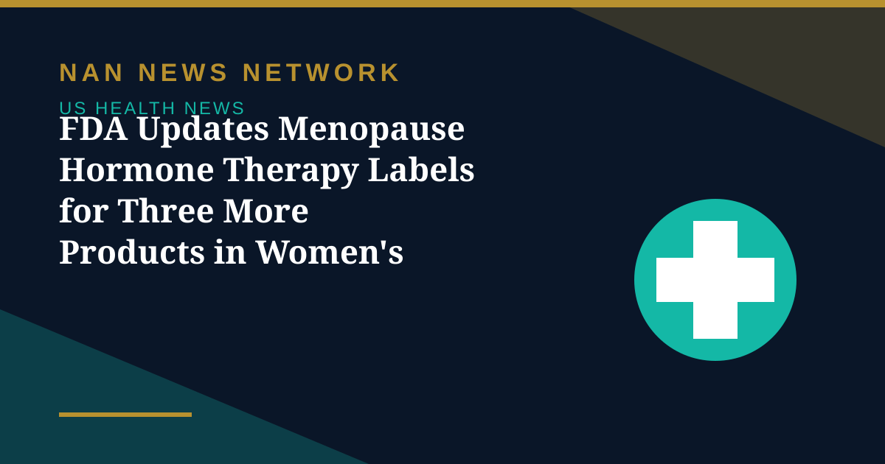

FDA Updates Menopause Hormone Therapy Labels for Three More Products in Women's Health Push

The US Department of Health and Human Services, through the Food and Drug Administration, on October 30, 2026 approved updated labeling for three additional menopausal hormone therapy products from two applicants, and provided an update on efforts to expand manufacturing capacity and availability of the therapies.
What changed
The three products with updated labeling are for estradiol transdermal patches. The action approves removal of the same outdated risk statements regarding cardiovascular disease, breast cancer and probable dementia from the boxed warning section that the FDA cleared for six products in February 2026. The agency said its actions are grounded in a sustained commitment to women's health as a cross-cutting priority.
The labeling effort supports President Trump's Executive Order, Advancing Women's Health to Improve Outcomes in All Phases of Life, signed on October 19, 2026. HHS said the First Lady was the impetus behind creating the executive order and the task force behind it.
Supply and access next
In November 2025, the FDA began engaging companies to submit proposed supplemental revisions to their hormone therapy labeling; to date, 29 drug companies have submitted proposed changes, and the FDA says it is working expeditiously with applicants on the remaining products. In addition to approving generic menopausal hormone therapies, the agency is working with sponsors to explore the potential for over-the-counter availability of vaginal estrogen products.
Patients and consumers have reported localized challenges with access, according to HHS, and the agency's parallel work on manufacturing changes aims to increase capacity and availability of the therapies for Americans who need them.
Sources: HHS, FDA, October 30, 2026
More on US Health News
- FDA Authorizes 24 Velo Nicotine Pouches, Bringing Total Authorized Pouches to 67
- FDA Declares Trader Joe's Chicken Wrap E. Coli Outbreak Over After 50 People Fell Ill
- FDA Recalls More Than 21,000 Bottles of Blood Pressure Drug Over Excess Active Ingredient
- FDA Recall: Miyoko's Plant-Based Butter Pulled in 10 States Over E. Coli, Yeast and Mold
- CDC: Drug-Resistant Germs Cause Nearly 9.7 Million US Infections a Year
- CDC Deputy Director Jennifer Shuford to Leave After Midterms, Report Says
- FDA Clears Cullinan's Velinotamig Trial for Autoimmune Blood Disorders
- Regeneron Extends US Ebola Supply Deal Worth About $270 Million Through 2031
- FDA Warns San Francisco Fermented Foods Maker Over Pathogen Risks and Labeling
- Salmonella Oyster Recall Expands: What to Know About the Little Wicomico Outbreak
- Graziers Raw Milk Cheese Recall: 13 Sick, 8 Hospitalized as FDA Issues Class I Warning
- CDC and FDA Performance Ratings Hit All-Time Lows in Gallup Poll